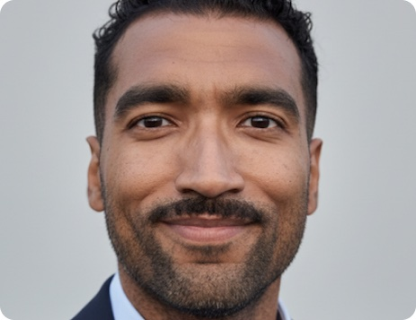
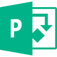
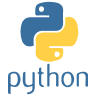
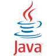
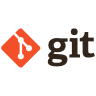

Roger designs digital products that make complex things simple, with an engineer’s precision and a developer’s understanding of how software is built.
Moving into UX/UI is not a restart. For more than a decade in civil engineering and BIM, in Brazil and Germany, he turned complex building data into precise visual documentation and defined what information each partner needed, when, and in what structure.
With an M.Sc. in Digital Engineering and hands-on Python, C#, Java and SQL, he thinks in systems, states and data, and speaks the language of the developers who build what he designs.
Based in Berlin.
Work permit holder for Germany.
Info
currently ↓
Completing the UX/UI Design Bootcamp at Ironhack (graduating Nov 2026). Looking for a first UX/UI or Product Designer role in Berlin: fintech, marketplaces, delivery or B2B SaaS.
2023 – 2025 ↓
Research Associate in BIM at HTW Berlin. Structured the information requirements of LiDAR2BIM and built an Open BIM toolchain that turns point clouds into 3D building models.
2022 – 2023 ↓
Technical Draughtsman in 3D BIM planning at NOKERA. Turned complex 3D models into execution documentation used directly in production.
2012 – 2018 ↓
Civil engineer in Brazil. Led teams and replaced paper field reports with digital documentation designed around how people actually worked.
Employment Reference
languages ↓
Portuguese (native), English (fluent, C1),
German (B2).
education ↓
Ironhack, Berlin
UX/UI Design Bootcamp
2026
Bauhaus-Universität Weimar
M.Sc. Digital Engineering
2018 – 2022
University of Pernambuco
B.Eng. Civil Engineering
2008 – 2012
skills ↓
UX/UI
- User research
- Information architecture
- Wireframing
- Prototyping
- Usability testing
Tools
- Figma
- 3D CAD
- Unity

MS Project
Code

Python
Java
Git
experience ↓
HTW Berlin
Research Associate, BIM
Nov 2023 – Sep 2025
NOKERA AG
Technical Draughtsman, 3D BIM
Jan 2022 – Sep 2023
Tecomat Engenharia
Civil Engineer, Team Leader
Sep 2017 – Sep 2018
R Schaeffer Construções
Civil Engineer, Site & Highway
Oct 2012 – Jan 2015
recognition ↓
9th Odebrecht Engineering Award
Odebrecht
2013